Capture anywhere
Record in-person and on-the-road meetings with the Blue Mic app for iOS and Android, or paste a transcript from any other meeting tool.
Blue Stream Solutions is a software company with one core mission: make information easier to capture, understand, optimize, and act on. Blue Mic is our flagship product, built from the ground up to deliver on that promise.
Blue Mic turns every sales conversation into coaching, CRM-ready notes, follow-up emails, and next-step reminders, automatically. Your reps record meetings on the road, or paste a transcript from any tool, and Blue Mic runs the entire post-call workflow.
One workflow, whether the meeting was recorded in the field or pasted in from another tool: Blue Mic coaches the call, writes the CRM notes, drafts the follow-ups, and reminds the rep to send them.

Record in-person and on-the-road meetings with the Blue Mic app for iOS and Android, or paste a transcript from any other meeting tool.
Sales Coach surfaces the wins, scores your priority objectives, and delivers coaching on what was missed or could improve.
Summary notes, follow-up tasks and reminders, and drafted emails flow straight into your CRM, with no end-of-day data entry.
Assign a role to each speaker (Sales Rep, Client Contact), and Blue Mic runs the complete post-call workflow shown above, coaching the rep and doing the CRM busywork for them. One run delivers every report and action, from post-meeting wins and priority-objective scoring on the Blue Mic Trifecta Award to drafted follow-ups and the CRM-ready summary note.
Contact info@blue-mic.com to bring Sales Coach to your team.
Blue Mic drafts the Sales Summary Note from the meeting and sends it to your CRM. Reps review and submit in seconds instead of retyping notes at the end of the day.
Blue Mic drafts the next-steps email from the conversation and pushes a follow-up task and reminder into your CRM, so nothing falls through after the call.
Post-meeting wins, priority-objective scoring (the Blue Mic Trifecta Award), and coaching on what was missed. For every rep, on every meeting, not just the ones a manager can sit in on.
Reps in the field record meetings with the Blue Mic app on iOS and Android: one tap, a live waveform, and a polished transcript the moment they stop. Back in the office on a different recorder? Paste the transcript into Blue Mic and run the exact same workflow.
Team Meetings gives managers a read-only view of every meeting their reps record or paste in, complete with Sales Coach results and awards. Open any call to review its summary, transcript, audio, and coaching, for the whole team.
A live view for sales leadership, built automatically from the meetings your reps are already recording. See who's improving, where every opportunity stands, and exactly where your attention will move the needle.
Want early access? Email info@blue-mic.com.
Blue Mic was built privacy-first. Meeting audio is encrypted, access is restricted to authenticated users, and any sharing happens through secure, expiring codes, never public links that can leak, get indexed, or be opened by anyone who stumbles on them.
All data is stored and processed in the United States, on AWS.
Your transcripts and meetings run through the AI providers' business APIs, never their consumer products, and none of them train their models on your data.
Meetings are only accessible to authenticated Blue Mic users on your team, never exposed on the open web.
No link previews, no browser history, no accidental indexing. Your meeting content stays private.
Each organization's meetings, notes, and settings are isolated to that tenant, so teams never see each other's data.
Audio, transcripts, and notes are encrypted in transit (TLS 1.2+) and at rest (AES-256), with public access blocked.
Why this matters. Many transcription tools share meetings through public web links, and the moment one of those URLs ends up somewhere it shouldn't, the meeting is gone:
Blue Mic was designed to close every one of those gaps.
Blue Mic is available exclusively for Enterprise teams. Tell us about your reps and your CRM, and we'll set up a demo.